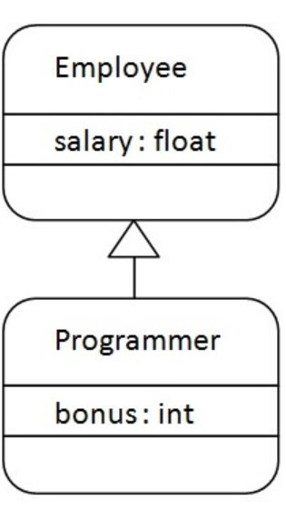

Inheritance in Java is a mechanism in which one object acquires all the properties and behaviors of a parent object.
It is an important part of OOPs (Object Oriented programming system).
The idea behind inheritance in Java is that you can create new classes that are built upon existing classes. When you inherit from an existing class, you can reuse methods and fields of the parent class. Moreover, you can add new methods and fields in your current class also.
Why use inheritance in java
For Method Overriding (so runtime polymorphism can be achieved).
For Code Reusability.
Terms used in Inheritance
Class:A class is a group of objects which have common properties. It is a template or blueprint from which objects are created.
Sub Class/Child Class:Subclass is a class which inherits the other class. It is also called a derived class, extended class, or child class.
Super Class/Parent Class:Superclass is the class from where a subclass inherits the features. It is also called a base class or a parent class.
Reusability:As the name specifies, reusability is a mechanism which facilitates you to reuse the fields and methods of the existing class when
you create a new class. You can use the same fields and methods already defined in the previous class.
The syntax of Java Inheritance
class Subclass-name extends Superclass-name
{
//methods and fields
}
The extends keyword indicates that you are making a new class that derives from an existing class. The meaning of "extends" is to increase the functionality.
In the terminology of Java, a class which is inherited is called a parent or superclass, and the new class is called child or subclass.
Java Inheritance Example

As displayed in the above figure, Programmer is the subclass and Employee is the superclass. The relationship between the two classes is Programmer IS-A Employee. It means that Programmer is a type of Employee.
Example
class Employee{
float salary=40000;
}
class Programmer extends Employee{
int bonus=10000;
public static void main(String args[]){
Programmer p=new Programmer();
System.out.println("Programmer salary is:"+p.salary);
System.out.println("Bonus of Programmer is:"+p.bonus);
}
}
Output
Programmer salary is:40000.0
Bonus of programmer is:10000
In the above example, Programmer object can access the field of own class as well as of Employee class i.e. code reusability.